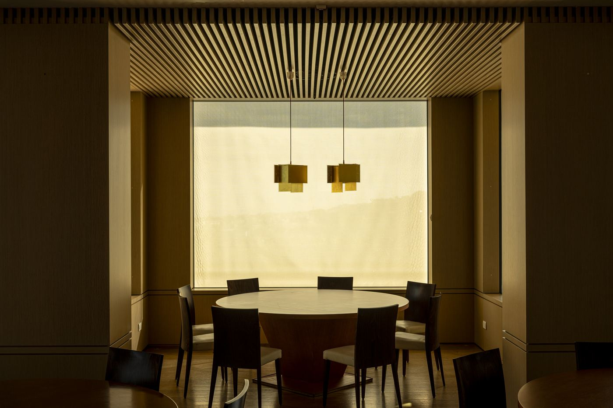

Business travel · Francavilla al Mare · Pescara
Take the pressure out of business travel.
A four-star hotel & spa above the Adriatic, minutes from Pescara, where meetings, recovery and a proper dinner are already arranged, so your only job is the one you came for.
The reality of the road
The wrong hotel costs you the trip.
The Executive Experience
A destination that moves business forward.

Work

Connect

Recharge

Rooms

Services

Recovery
For business guests
Executive Business Stay Package
Planning regular trips to Abruzzo? Ask us about the Executive Business Stay Package and the company rates we offer to business travellers.
One day, no friction
A Tuesday at Villa Maria.

06:30

08:30

10:00
13:00
18:30

21:00
About business stays
Work, meet and recover in one place.
Villa Maria is a congress hotel as well as a spa hotel: five conference rooms, quiet rooms with a real desk, a restaurant for business dinners and the Linfa spa for the end of the day, all minutes from Pescara.
Five conference rooms
From board meetings to plenary sessions, the hotel has five conference rooms, with video-conferencing and fast Wi-Fi. Send us your group size and format and we will propose the right room.
Events and incentives
Product launches, training days and company retreats: we can combine meeting rooms with coffee breaks, lunches on the terrace, padel tournaments and team dinners. Ask for a tailored proposal.
Getting here fast
Abruzzo Airport (Pescara) is a short drive away, Pescara Centrale station has rail links along the Adriatic and to Rome, and the A14 Pescara Sud exit is close. Free private parking on site.
Rooms that work
Quiet rooms facing the park or the sea, with a writing desk, power by the bed and high-speed Wi-Fi for video calls. Early breakfast and express check-out keep you on time.
After the last meeting
A free two-hour session in the Linfa spa (hydromassage pool, Turkish bath, sauna), a game on the padel court in the garden, and dinner on the terrace.
Questions & answers
Good to know before you go.
Where is Villa Maria Hotel & Spa?
On the hill above Francavilla al Mare, just south of Pescara in Abruzzo. Abruzzo Airport (Pescara) is a short drive away, Pescara Centrale station has easy rail connections, and the A14 Pescara Sud exit is close by.
Does the hotel have meeting rooms?
Yes, five conference rooms, from small meeting rooms to an auditorium, with video-conferencing and fast Wi-Fi. Ask us about capacity for your group.
Can I get an invoice for my company?
Yes. We bill your company directly and welcome corporate cards. If you have a company code, add it when you book.
What is in the Executive Business Stay Package?
A Superior or Deluxe room with a writing desk, breakfast served early, high-speed Wi-Fi, spa and sauna access, padel, pool and gym, a meeting room on request, express check-out and private parking.
Is there parking?
Yes. Private parking is free for guests and includes EV charging.
Your next trip to Abruzzo can feel lighter.
Ask us anything, from meeting-room capacity to the quietest room in the house.